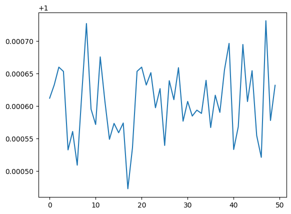
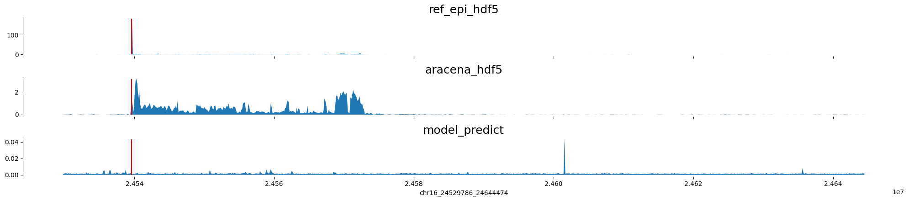
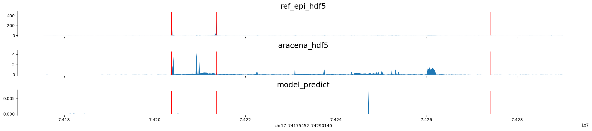
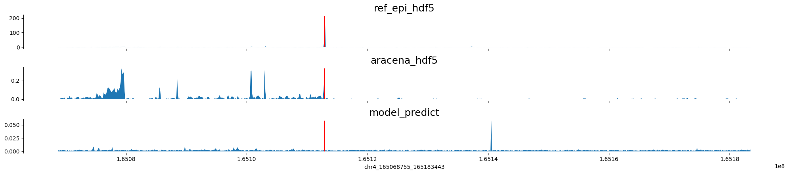
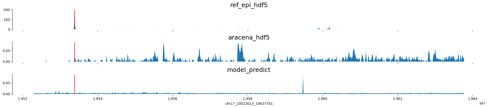
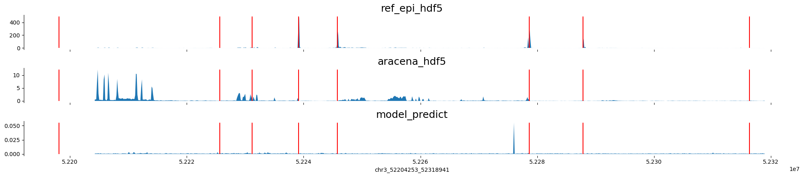
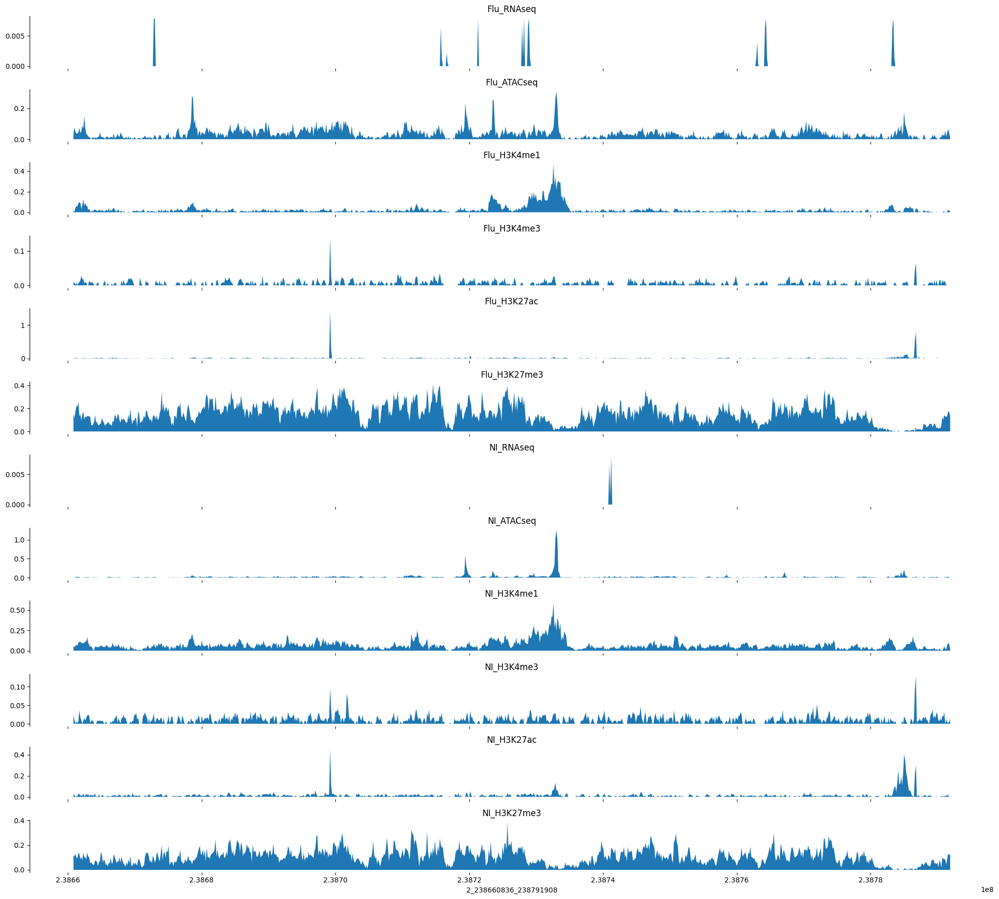
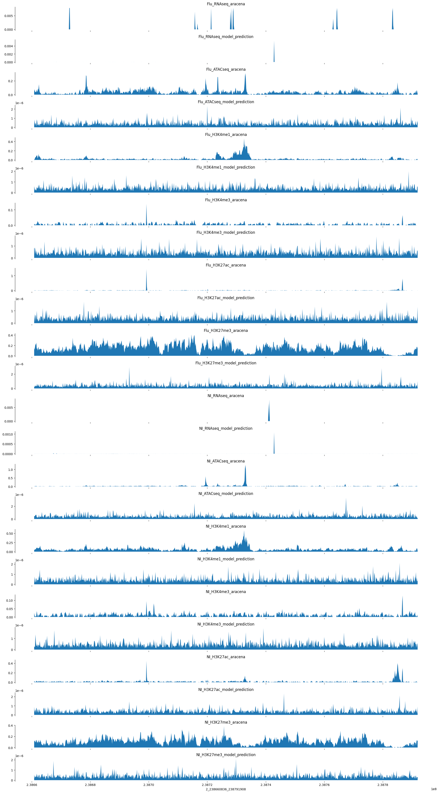
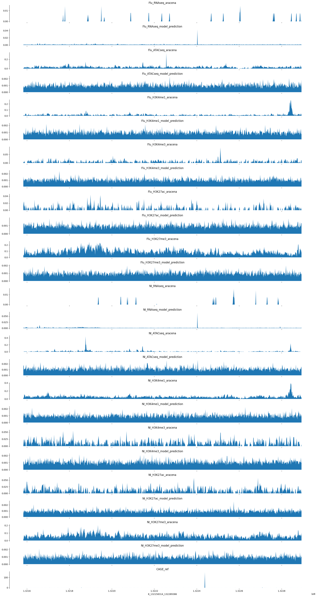

Code
import h5py
import numpy as np
import torch
import os,sys
import pickle as pkl
import kipoiseq
sys.path.append("./../2023-09-05-ref_to_aracena_mlp")
import ref_to_aracena_modelsimport h5py
import numpy as np
import torch
import os,sys
import pickle as pkl
import kipoiseq
sys.path.append("./../2023-09-05-ref_to_aracena_mlp")
import ref_to_aracena_modelsmodel_type = "cnn"
cur_individual = "AF20"
device = (
"cuda"
if torch.cuda.is_available()
else "mps"
if torch.backends.mps.is_available()
else "cpu"
)
print(device)
if model_type == "linear":
cur_model = ref_to_aracena_models.RefToAracenaMLP(hidden_layer_dims=[])
else:
cur_model = ref_to_aracena_models.RefToAracenaCNN()
cur_model = cur_model.to(device)cpusaved_models_path = "/beagle3/haky/users/saideep/projects/aracena_modeling/saved_models"
trained_model_path = os.path.join(saved_models_path, "/beagle3/haky/users/saideep/projects/aracena_modeling/saved_models/train1_ref_to_aracena_cnn_poissonlog_ep9_lr1e-06.pt")
# trained_model_path = os.path.join(saved_models_path, "train1_ref_to_aracena_cnn_poissonlog_ep19_lr1e-06.pt")
saved_model = torch.load(trained_model_path, map_location=device)
cur_model.load_state_dict(saved_model["model_state_dict"])
cur_model.eval()RefToAracenaCNN(
(model): Sequential(
(0): Sequential(
(0): BatchNorm1d(5313, eps=1e-05, momentum=0.1, affine=True, track_running_stats=True)
(1): GELU()
(2): Conv1d(5313, 24, kernel_size=(4,), stride=(2,), padding=(1,))
(3): BatchNorm1d(24, eps=1e-05, momentum=0.1, affine=True, track_running_stats=True)
(4): GELU()
(5): Conv1d(24, 24, kernel_size=(4,), stride=(2,), padding=(1,))
(6): BatchNorm1d(24, eps=1e-05, momentum=0.1, affine=True, track_running_stats=True)
(7): GELU()
(8): Conv1d(24, 24, kernel_size=(4,), stride=(2,), padding=(1,))
)
(1): Sequential(
(0): Flatten(start_dim=1, end_dim=-1)
(1): Linear(in_features=2688, out_features=10752, bias=True)
(2): Softplus(beta=1, threshold=20)
(3): Unflatten(dim=1, unflattened_size=(12, 896))
)
)
)saved_model_loss = saved_model["loss"]
import matplotlib.pyplot as plt
import seaborn as sns
# plt.plot(loss_tracker)
sns.lineplot(saved_model_loss)<Axes: >
sns.lineplot(saved_model_loss[-50:])<Axes: >
These sites and corresponding TSS sites were extracted in 2023-09-20-diagnose_training_tracks_issue and serve as a good test set to observe model performance.
def plot_tracks(tracks, interval, vlines,height=1.5):
fig, axes = plt.subplots(len(tracks), 1, figsize=(20, height * len(tracks)), sharex=True)
for ax, (title, y) in zip(axes, tracks.items()):
ax.fill_between(np.linspace(interval[1], interval[2], num=len(y)), y)
ax.set_title(title, fontsize=18)
ax.vlines(list(vlines),0, max(y), color="red")
sns.despine(top=True, right=True, bottom=True)
ax.set_xlabel("_".join([str(x) for x in interval]))
plt.tight_layout()
def query_epigenome_from_hdf5(region, individual="AF20"):
import pandas as pd
import h5py
col_region = "_".join([region[0].strip("chr"),region[1],region[2]])
mapping_table = pd.read_csv("/beagle3/haky/users/saideep/projects/aracena_modeling/hdf5_training/index_files/remapped_table_filt.csv", index_col=0)
if col_region not in mapping_table.columns:
print(col_region, "not present in hdf5")
return None,"region not present in hdf5"
query_index = int(mapping_table.loc["ref-epigenome", col_region])
query_group = mapping_table.loc["group", col_region]
print(query_index,query_group)
enformer_ref_targets = f"/beagle3/haky/users/saideep/projects/aracena_modeling/hdf5_training/ref-epigenome_{query_group}_aracena.h5"
with h5py.File(enformer_ref_targets, 'r') as ert:
query = ert['ref_epigenome'][:,:,query_index]
return query, None
def query_aracena_from_hdf5(region, individual="AF20"):
import pandas as pd
import h5py
col_region = "_".join([region[0].strip("chr"),region[1],region[2]])
mapping_table = pd.read_csv("/beagle3/haky/users/saideep/projects/aracena_modeling/hdf5_training/index_files/remapped_table_filt.csv", index_col=0)
if col_region not in mapping_table.columns:
print(col_region, "not present in hdf5")
return None,"region not present in hdf5"
query_index = int(mapping_table.loc[individual, col_region])
query_group = mapping_table.loc["group", col_region]
print(query_index,query_group)
enformer_ara_targets = f"/beagle3/haky/users/saideep/projects/aracena_modeling/hdf5_training/{individual}_{query_group}_aracena.h5"
print(enformer_ara_targets)
with h5py.File(enformer_ara_targets, 'r') as ert:
query = ert['targets'][:,0,query_index]
return query, None
def predict_on_ref_epi(cur_model, ref_epi_input, model_type, device = "cpu"):
cur_model = cur_model.to(device)
if model_type == "linear":
input_tensor = torch.from_numpy(ref_epi_input).to(device).unsqueeze(0)
elif model_type == "cnn":
print("pred_func", ref_epi_input.shape)
input_tensor = torch.from_numpy(ref_epi_input).to(device).unsqueeze(0).swapaxes(1,2)
prediction_raw = cur_model(input_tensor)
if model_type == "linear":
prediction = prediction_raw.squeeze().cpu().detach().numpy()[:,:].swapaxes(0,1)
elif model_type == "cnn":
print("pred_func", prediction_raw.shape)
prediction = prediction_raw.squeeze().cpu().detach().numpy()[:,:].swapaxes(0,1)
print("pred_func_last",prediction.shape)
return predictionwith open("/beagle3/haky/users/saideep/github_repos/Daily-Blog-Sai/posts/2023-09-20-diagnose_training_tracks_issue/tss_mapping_dict.pkl", "rb") as tmd:
tss_mapping_dict = pkl.load(tmd)
with open("/beagle3/haky/users/saideep/github_repos/Daily-Blog-Sai/posts/2023-09-20-diagnose_training_tracks_issue/tss_mapping_dict_gene_names.pkl", "rb") as tmd:
tss_mapping_dict_gene_names = pkl.load(tmd)
c=0
for region in tss_mapping_dict.keys():
print(region)
if c < 3:
c+=1
continue
if c==10:
break
else:
c+=1
region_split = region.split("_")
print("collecting ref query")
ref_query_hdf5, flag = query_epigenome_from_hdf5(region_split)
if flag == "region not present in hdf5":
continue
ara_query_hdf5, flag = query_aracena_from_hdf5(region_split)
if flag == "region not present in hdf5":
continue
region_for_plot_raw = [region_split[0],int(region_split[1]),int(region_split[2])]
region_for_plot_kipoi_resized = kipoiseq.Interval(*region_for_plot_raw).resize(896*128)
region_for_plot = [region_for_plot_kipoi_resized.chrom,
region_for_plot_kipoi_resized.start,
region_for_plot_kipoi_resized.end]
region_browser = region_for_plot[0]+":"+str(region_for_plot[1])+"-"+str(region_for_plot[2])
print("ref_query",ref_query_hdf5.shape)
model_prediction = predict_on_ref_epi(cur_model, ref_query_hdf5, "cnn")
print(region_browser, "genes:", tss_mapping_dict_gene_names[region], "region len:", (int(region_for_plot[2])-int(region_for_plot[1])))
tracks_for_plot = {"ref_epi_hdf5":ref_query_hdf5[:,4766],
"aracena_hdf5":ara_query_hdf5,
"model_predict":model_prediction[:,0]}
plot_tracks(tracks_for_plot,region_for_plot, tss_mapping_dict[region])chr4_113630947_113762019
chr11_18427720_18558792
chr16_85805681_85936753
chr7_136783551_136914623
collecting ref query
7_136783551_136914623 not present in hdf5
chr16_24521594_24652666
collecting ref query
7 train1
8 train1
/beagle3/haky/users/saideep/projects/aracena_modeling/hdf5_training/AF20_train1_aracena.h5
ref_query (896, 5313)
pred_func (896, 5313)
pred_func torch.Size([1, 12, 896])
pred_func_last (896, 12)
chr16:24529786-24644474 genes: ['RBBP6'] region len: 114688
chr17_74167260_74298332
collecting ref query
10 train1
11 train1
/beagle3/haky/users/saideep/projects/aracena_modeling/hdf5_training/AF20_train1_aracena.h5
ref_query (896, 5313)
pred_func (896, 5313)
pred_func torch.Size([1, 12, 896])
pred_func_last (896, 12)
chr17:74175452-74290140 genes: ['RPL38', 'TTYH2', 'DNAI2'] region len: 114688
chr9_93148172_93279244
collecting ref query
13 train1
14 train1
/beagle3/haky/users/saideep/projects/aracena_modeling/hdf5_training/AF20_train1_aracena.h5
ref_query (896, 5313)
pred_func (896, 5313)
pred_func torch.Size([1, 12, 896])
pred_func_last (896, 12)
chr9:93156364-93271052 genes: ['WNK2'] region len: 114688
chr4_165060563_165191635
collecting ref query
17 train1
18 train1
/beagle3/haky/users/saideep/projects/aracena_modeling/hdf5_training/AF20_train1_aracena.h5
ref_query (896, 5313)
pred_func (896, 5313)
pred_func torch.Size([1, 12, 896])
pred_func_last (896, 12)
chr4:165068755-165183443 genes: ['TMEM192'] region len: 114688
chr17_19514821_19645893
collecting ref query
18 train1
19 train1
/beagle3/haky/users/saideep/projects/aracena_modeling/hdf5_training/AF20_train1_aracena.h5
ref_query (896, 5313)
pred_func (896, 5313)
pred_func torch.Size([1, 12, 896])
pred_func_last (896, 12)
chr17:19523013-19637701 genes: ['SLC47A1'] region len: 114688
chr3_52196061_52327133
collecting ref query
19 train1
20 train1
/beagle3/haky/users/saideep/projects/aracena_modeling/hdf5_training/AF20_train1_aracena.h5
ref_query (896, 5313)
pred_func (896, 5313)
pred_func torch.Size([1, 12, 896])
pred_func_last (896, 12)
chr3:52204253-52318941 genes: ['ALAS1', '', 'TLR9', 'TWF2', 'PPM1M', 'WDR82', 'GLYCTK', 'DNAH1'] region len: 114688
chr2_167285886_167416958





Load in some validation datasets for evaluation
validation_path = "/beagle3/haky/users/saideep/projects/aracena_modeling/hdf5_training/AF20_valid_aracena.h5"
sequence_ind = 40
track_ind = 1
with h5py.File(validation_path, "r") as f:
example_valid = f['targets'][:,:,sequence_ind]
example_valid_reg = f['regions'][:,:,sequence_ind]
print(example_valid.shape)
print(example_valid_reg.shape)
print(example_valid_reg[0,2]-example_valid_reg[0,1])
bigwig_track_readouts = [
"RNAseq",
"ATACseq",
"H3K4me1",
"H3K4me3",
"H3K27ac",
"H3K27me3"
]
conditions = ["Flu","NI"]
bigwig_tracks = []
for condition in conditions:
for bigwig_track_readout in bigwig_track_readouts:
bigwig_tracks.append(condition+"_"+bigwig_track_readout)
(896, 12)
(1, 3)
131072tracks = {}
for i,track in enumerate(bigwig_tracks):
tracks[track] = example_valid[:,i]
target_interval = [str(example_valid_reg[0,0]), example_valid_reg[0,1], example_valid_reg[0,2]]
plot_tracks(tracks, target_interval)
We can now make a prediction on the corresponding input region using our stored model(s)
import pandas as pd
group = "valid"
mapping_table = pd.read_csv("/beagle3/haky/users/saideep/projects/aracena_modeling/hdf5_training/index_files/remapped_table_filt.csv", index_col=0)
print(mapping_table.shape)(9, 1572)target_interval_str = "_".join([str(x) for x in target_interval])
print(target_interval_str)
ref_index = mapping_table.loc["ref-epigenome", target_interval_str]
print(ref_index)
print(target_interval_str in mapping_table.columns)
with h5py.File(f"/beagle3/haky/users/saideep/projects/aracena_modeling/hdf5_training/ref-epigenome_{group}_aracena.h5", "r") as f:
example_ref_pred = f['ref_epigenome'][:,:,int(ref_index)]
example_ref_region = f['regions'][:,:,int(ref_index)]
example_ref_region_str = "_".join([str(x) for x in example_ref_region[0,:]])
print(example_ref_region_str)
print(target_interval_str)
print(example_ref_pred.shape)2_238660836_238791908KeyError: '2_238660836_238791908'def create_tracks(aracena, predictions, track_names):
tracks = {}
for i,track_name in enumerate(track_names):
for track_type in ['aracena', 'model_prediction']:
if track_type == 'aracena':
tracks[track_name+"_"+track_type] = aracena[:,i]
elif track_type == 'model_prediction':
tracks[track_name+"_"+track_type] = predictions[i,:]
return tracks
cur_model = cur_model.to(device)
if model_type == "linear":
input_tensor = torch.from_numpy(example_ref_pred).to(device).unsqueeze(0).to(device)
elif model_type == "cnn":
input_tensor = torch.from_numpy(example_ref_pred).to(device).unsqueeze(0).to(device).swapaxes(1,2)
# input_tensor = torch.from_numpy(example_ref_pred).to(device).unsqueeze(0).to(device)
ex_out_raw = cur_model(input_tensor)
if model_type == "linear":
ex_out = ex_out_raw.squeeze().cpu().detach().numpy()[:,:].swapaxes(0,1)
elif model_type == "cnn":
ex_out = ex_out_raw.squeeze().cpu().detach().numpy()[:,:].swapaxes(0,1)
print(ex_out.shape)
print(np.sum(ex_out, axis=0))
tracks = create_tracks(example_valid, ex_out.swapaxes(0,1), bigwig_tracks)NameError: name 'example_ref_pred' is not definedplot_tracks(tracks, target_interval)
OK, for this example things are not so promising. It seems like the model was converging on the training set at least, maybe some of those predictions will show promise.
model_type = "cnn"
group = "train1"
cur_individual = "AF20"
device = (
"cuda"
if torch.cuda.is_available()
else "mps"
if torch.backends.mps.is_available()
else "cpu"
)
print(device)
if model_type == "linear":
cur_model = ref_to_aracena_models.RefToAracenaMLP(hidden_layer_dims=[])
else:
cur_model = ref_to_aracena_models.RefToAracenaCNN()
cur_model = cur_model.to(device)
train_path = f"/beagle3/haky/users/saideep/projects/aracena_modeling/hdf5_training/AF20_{group}_aracena.h5"
saved_models_path = "/beagle3/haky/users/saideep/projects/aracena_modeling/saved_models"
trained_model_path = os.path.join(saved_models_path, "/beagle3/haky/users/saideep/projects/aracena_modeling/saved_models/train1_ref_to_aracena_cnn_poissonlog_ep9_lr1e-06.pt")
# trained_model_path = os.path.join(saved_models_path, "train1_ref_to_aracena_cnn_poissonlog_ep19_lr1e-06.pt")
saved_model = torch.load(trained_model_path, map_location=device)
cur_model.load_state_dict(saved_model["model_state_dict"])
cur_model.eval()
sequence_ind = 6
with h5py.File(train_path, "r") as f:
example_train = f['targets'][:,:,sequence_ind]
example_train_reg = f['regions'][:,:,sequence_ind]
target_interval = [str(example_train_reg[0,0]), example_train_reg[0,1], example_train_reg[0,2]]
target_interval_str = "_".join([str(x) for x in target_interval])
print(target_interval_str)
ref_index = mapping_table.loc["ref-epigenome", target_interval_str]
print(ref_index)
with h5py.File(f"/beagle3/haky/users/saideep/projects/aracena_modeling/hdf5_training/ref-epigenome_{group}_aracena.h5", "r") as f:
example_ref_pred = f['ref_epigenome'][:,:,int(ref_index)]
example_ref_region = f['regions'][:,:,int(ref_index)]
print(example_train_reg, example_ref_region)
if model_type == "linear":
input_tensor = torch.from_numpy(example_ref_pred).to(device).unsqueeze(0).to(device)
elif model_type == "cnn":
input_tensor = torch.from_numpy(example_ref_pred).to(device).unsqueeze(0).to(device).swapaxes(1,2)
ex_out_raw = cur_model(input_tensor)
ex_out = ex_out_raw.squeeze().cpu().detach().numpy()[:,:].swapaxes(0,1)
if model_type == "linear":
pass
elif model_type == "cnn":
ex_out = ex_out.swapaxes(0,1)
tracks = create_tracks(example_train, ex_out, bigwig_tracks)
tracks["CAGE_ref"] = example_ref_pred[:,4766]cpu
8_132158314_132289386
5
[[ 8 132158314 132289386]] [[ 8 132158314 132289386]]example_ref_pred.shape(896, 5313)plot_tracks(tracks, target_interval)